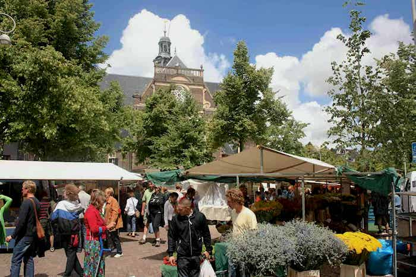

- IJhallen

IJhallen is echt 'de place to be'. Ik zie het altijd als een dagje uit. Gezellig met de pond naar ndsm-werf in noord. Een letter frietje of poffertje tussendoor en tijdens het kopen ben je ook nog bewust bezig. De IJhallen zijn voornamelijk gericht op interieur en kleren. Een goede variant hiervan is de markt op het Waterloo plein, niet al te ver van de HvA Amstelcampus.
- Negen straatjes

Midden in het centrum heb je de negen straatjes. Een stuk minder druk dan de touristische winkels in de Kalverstraat. Vooral in de winter is dit een fantatische plek om te kopen overal lampjes, gezellig verlicht. Stuk voor stuk zijn de winkels heel origineel en je kijkt je ogen uit!
- Lucies
Een klein sieraden winkeltje net achter het Spui. Aardig bekend onder de jongeren en trekt dus veel mensen. Altijd een goede plek voor een leuk paar oorbellen en een armbandje.
- Laura Dols
Een lekker appart winkeltje in de de negen straatjes. Allemaal vintage spulletjes, maar zeker geen normale dingen. Elk stuk nog bijzonderder dan de vorige. Voor een uniek item moet je zeker bij Laura Dols zijn.
- Noordermarkt

Lekker op een zaterdag ochtend op de markt lopen. Een leuke bos bloemen halen en wat verse groenten. Als afsluiting ergens een koffie drinken of lekker lunchen.
- Beadies
Beadies is een sieraden winkeltje, maar niet zomaar een. Hier kun je je eigen sieraden samenstellen naar eigen wil. Je zou bijvoorbeeld je eigen kettingdikte uit kunnen zoeken en daar een passend bedeltje bij kunnen vinden. Dit is op zijn eigen manier weer bewust bezig zijn, want zo creëer je hogelijk iets wat je heel leuk vindt en langer mee doet.
- Kilo store
De kilo store is een vintage winkel, het concept van de Kilo store is erg interessant. Je hebt meerdere kleurcatogoriën en per kleur zit een vaste prijs per kilo. Kilo store is zeker niet alleen in Amsterdam verkrijgbaar en kent ook veel locaties buiten Nederland. Een soortgelijke winkelketen qua populairiteit is de episode.
- Blond Amsterdam
Blond Amsterdam is altijd wel grappig om even langs te gaan. Met hun duidelijk herkenbare en volgens mij iconische tekenstijl is alles leuk. Vroeger hadden ze een winkel achter marie-heinekenplein en nu een café/ winkel. In het fel roze een niet te missen winkel om even leuk servies
- Oudemanhuispoort boekenmarkt
In de passage van Oudemanhuispoort heb je een dagelijkse boekenmarkt. Er zijn hier wat nieuwe boeken te vinden, maar vooral veel oude boeken. Heel leuk om eens doorheen te lopen, gelegen aan de Ouderzijds Achterburgwal.
- Marice Stella Maris
Marice Stella Maris zegt je misschien wat zonder dat je zelf weet waardoor. Bekend bij de meeste mensen onder het water wat ze verkopen. Echter hebben ze ook een groot aanbod aan verzorgingsproducten.